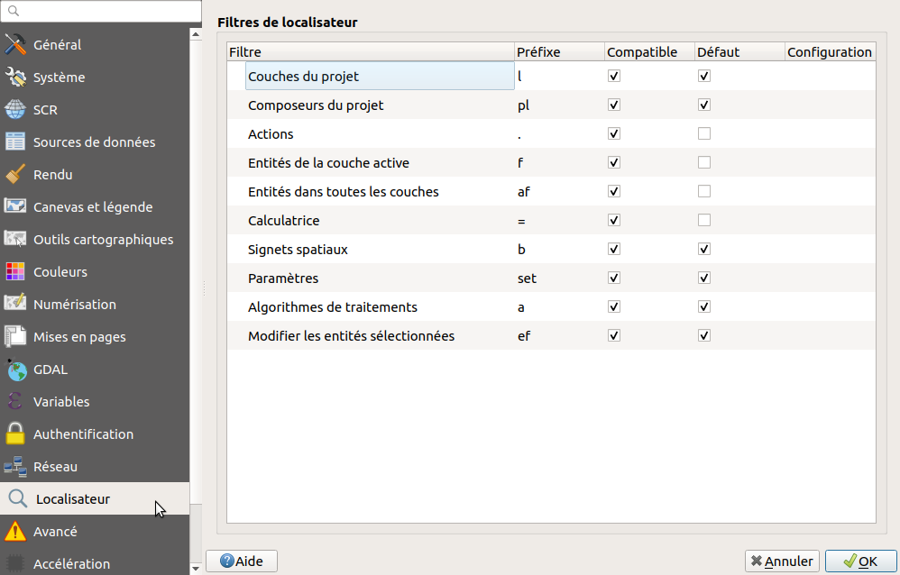
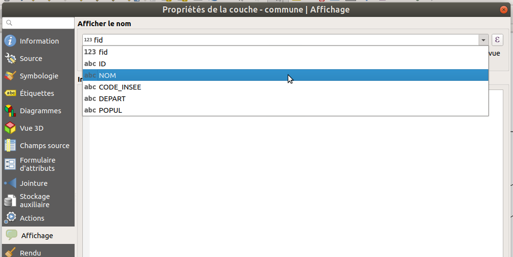
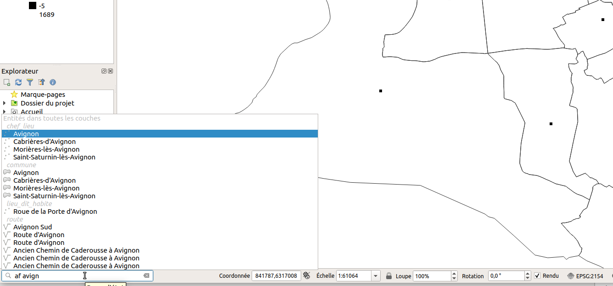

Table of content
Autres
La barre de recherche:
QGIS 3 propose un nouvel outil de recherche par autocomplétion intégré dans la barre de statut, en bas à gauche. QGIS permet de rechercher parmi:
- Actions
- Calculatrice
- Algorithmes de traitement
- Entités dans toutes les couches
- Signets spatiaux
- Modifier les entités sélectionnées
- Entités de la couche sélectionnée
- Couches du projet
- Composeurs du projet
- Paramètres
Dans les propriétés de QGIS :

La recherche dans les entités de couche ne montre des résultats que sur le champ d'affichage. Dans les propriétés de la couche, onglet Affichage

On lance la recherche via CTRL+K ou en cliquant dans le champ, puis on peut taper un code pour filtrer la recherche (ex: af), et enfin le terme recherché. On valide avec Entrée pour afficher l'item trouvé.
